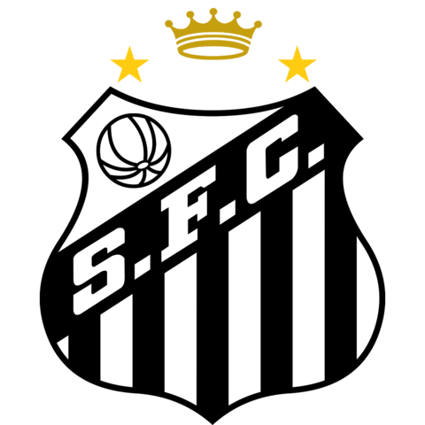

Homepage do MAIOR TIME DA TERRA

O Santos Futebol Clube foi fundado no dia 14 de abril de 1912, como resultado de uma iniciativa de três esportistas da cidade. Todos os interessados foram convidados a participar da reunião inaugural do clube, que foi fundado com o objetivo de participar de campeonatos de futebol, que estavam dando seus primeiros passos.
No início, o clube tinha o nome de Santos Foot-ball Club e as cores eram o azul e branco, com detalhes em dourado. Em 1913, porém, as cores do clube passaram a ser o clássico branco e preto.
As primeiras conquistas do clube começaram no ano de 1913, com o título do Campeonato Santista.
Atualmente, o clube é mundialmente conhecido, devido às suas diversas conquistas e a marca de jogadores muito importantes para a história do futebol.
No dia 23 de outubro de 1940 nascia, na cidade de Três Corações, Edson Arantes do Nascimento, que estava destinado a ser o maior futebolista da história.
Pelé, como ficou conhecido mundialmente, chegou ao clube da baixada no ano de 1956, já encantando todos ao seu redor. Ele fez sua estreia profissional no dia 7 de setembro de 1956, com apenas 15 anos, contra o Corinthians de Santo André. Na partida, o Santos venceu por 7 a 1 e Pelé fez o primeiro de seus 1283 gols.
Pelé ganhou, com o Santos, 10 Campeonatos Paulistas, 6 Campeonatos Brasileiros, 2 Copas Libertadores da América, 2 Copas Intercontinentais (atual Mundial de Clubes), 1 Recopa dos Campeões Intercontinentais.
Pela Seleção Brasileira, o Rei ganhou 3 Copas do Mundo, além de mudar para sempre a forma como enxergamos o esporte.
O Estádio Urbano Caldeira, a Vila Belmiro, foi inaugurado no dia 12 de outubro de 1916, mas por conta de uma forte chuva, só recebeu sua primeira partida no dia 22 de outubro do mesmo ano. Na ocasião, o Santos venceu o Ypiranga pelo placar de 2 a 1.
O Estádio recebeu esse nome em homenagem à Urbano Vilella Caldeira Filho, que foi atleta, técnico e dirigente do clube santista.
O maior artilheiro do alçapão é Pelé, com 288 gols.